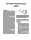
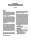

|
CEREBRO: A System to Manage Deep Learning for Relational Data Analytics
Arun Kumar (Univ. of California, San Diego) |
|
ExpoDB: An Exploratory Data Science Platform
Mohammad Sadoghi (Purdue University) |
|
Snorkel: A System for Lightweight Extraction
Alexander Ratner (Stanford University), Stephen Bach (Stanford), Henry Ehrenberg (Stanford), Jason Fries (Stanford), Sen Wu (Stanford), Christopher Re? (Stanford) |
|  |
RLEX: Saftey and Data Quality in Reinforcement Learning-based and Adaptive Systems
Sanjay Krishnan (UC Berkeley) |
|
Active Database Learning
Yongjoo Park (University of Michigan) |
|
MODELDB: A System for Machine Learning Model Management
Manasi Vartak (MIT) |
 |
Mike Franklin Spits Fire
Mike Franklin (University of Chicago) |
|
Predictive Provisioning: A Progress Report
Becca Taft (MIT) |
|
Dial M for Management: Next Generation NoSQL
Kathryn Dahlgren (UC Santa Cruz) |
|
Neuromorphic Hardware As Database Co-Processors
Thomas Heinis (Imperial College Imperial) |
|
The Automatic Scientist will be a Data System
Stratos Idreos (Harvard University) |
|  |
GeneralStore: Declarative Programmable Storage
Peter Alvaro (UC Santa Cruz) |
 |
Exploring a continuum between main-memory and disk-oriented OLTP systems
Caetano Sauer (TU Kaiserslautern) |
|
What's Up with the Storage Hierarchy?
Philippe Bonnet (IT University of Copenhagen) |
|
Event Evolution and Archiving
Omar Alonso (Microsoft) |
|
How to Talk to People at Conferences
Mark Callaghan (Facebook) |
|
Reaching Mutual Understanding in a Society of Humans and Database Systems
Arash Termehchy (Oregon State University) |
|
AgriBase: Status Labeling for IoT Systems
Hiroyuki Uchiyama (NTT) |
|
Playing Information LEGO at Large Scale
Sebastian Michel (TU Kaiserslautern) |
|
Elementary, dear Watson!
Manohar Kaul (IIT Hyderabad) |
|
Towards Benchmarking Multi-Model Databases
Jiaheng Lu (University of Helsinki) |
|
Secure Data Systems and Performance: Friends or Foe?
Manos Athanassoulis (Harvard SEAS) |
|
CIDR: Chat-oriented Innovations in Database Research
Eugene WU (Columbia University) |
|
We Are Boring
Samuel Madden (MIT CSAIL) |
|
Answer yes/no queries in search engines
Chunbin Lin (UCSD) |
|
In Database We Trust?
Lance Feagan (IBM China Research Lab) |
|
What is the Population of Interest: Population Modeling for BayesDB
Richard Tibbetts (MIT) |
|
Scalable In-Situ Exploration over Raw Data
Florin Rusu (UC Merced) |
|
What is Our Agenda for Data Science?
AnHai Doan |
|
NoSym: Non-Symbolic Databases for Data Decoupling
Souleiman Hasan (Insight at NUI Galway) |
|
Next Generation Consistency Enforcement
Zechao Shang (The University of Chicago) |
|
Query processing for datacenter-scale computers
Spyros Blanas (The Ohio State University) |
|
Reprowd: Crowdsourced Data Processing Made Reproducible
Jiannan Wang (Simon Fraser University) |
|
Density Peaks Clustering with Differential Privacy
Shengna Guo (Renmin university of china), Xiaofeng Meng (Renmin University of China) |
|
SQL for NoSQL Databases: Deja Vu (Part 2)
Christoph Bussler (Oracle Corporation) |
|
Casual Querying: Facilitating Information Dissemination in Ad-hoc Environments
Arnab Nandi (The Ohio State University) |
|
A Visual Cloud for Virtual Reality Applications
Magdalena Balazinska (University of Washington), Luis Ceze (University of Washington), Alvin Cheung (University of Washington), Brian Curless (University of Washington), Steve Seitz (University of Washington) |
|
Treating Microservices as a Unifed, Distributed Database
Brennan Saeta (Coursera Inc) |
|
Hybrid: A Large-scale In-memory Image Analytics Engine
Michael Gubanov (University of Texas, San Anton) |
|
Stop the Truthiness and Just Be Wrong
Oliver Kennedy (University at Buffalo) |
|
On the design of a Globally Distributed, Locally Compressed Knowledge Base System
Olivier CURE (UPEM) |
|
Representation Independent Data Analytics
Jose Picado (Oregon State University) |